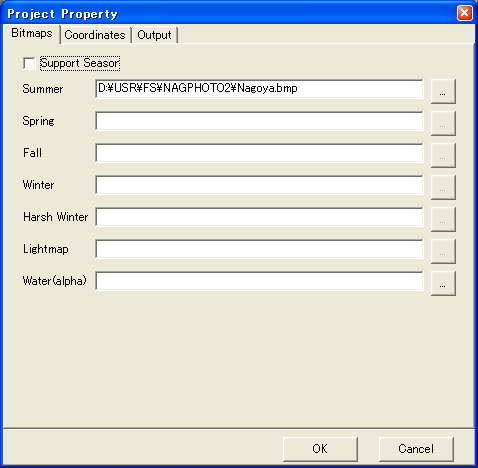
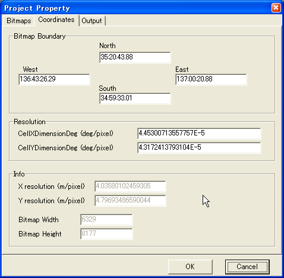
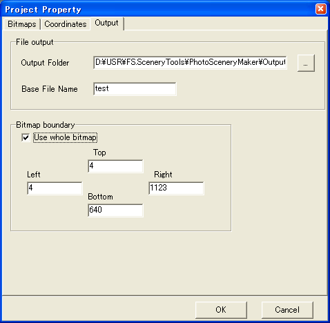

Create project
Select "New" from "File" menu to create new project.
Specify bitmap files
Specify bitmap files at "Bitmaps" tab.

If you don't use seasonal/lightmap textures, uncheck the "Support Season",
then specify only Summer bitmap.
Or you must specify all bitmaps (except for Water bitmap).
Specify coordinates parameters
You can specify bitmap area and resolutions at "Coordinates" tab.
You can use "calibration" feature to specify them, so you can ignore this tab at this moment.

Specify output parameters
Select "Output" tab, specify Output Folder. All generated files (BGL files, texture files)
will be stored in this folder.
Then specify Base File Name, which becomes scenery BGL base file name.
